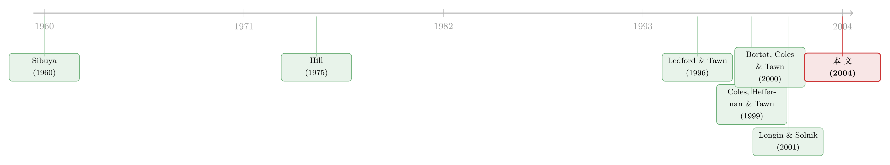

市场一起崩，是规律还是错觉？——给「尾部相依」装一把会区分的尺子
本文读的是 Poon, Rockinger & Tawn (2004, Review of Financial Studies)：他们用多元极值理论 (multivariate extreme value theory) 给「市场会不会一起崩」这个问题装上了两把互补的尺子 χ 与 χ̄，并用五大股指证明，国际股市在极端处大多是「渐近独立」(asymptotic independence) 的——这意味着金融界惯用的、默认「渐近相依」的多元极值模型，会系统性高估联合崩盘的概率。
1 一个被相关系数藏起来的问题
先问一个看似简单的问题：当美国股市暴跌的那一天，日本股市同时暴跌的概率有多大？
你大概会脱口而出：去看相关系数 (correlation) 啊。美日股市的 Pearson 相关系数是 0.267，德法之间是 0.695，于是结论似乎现成——德法绑得更紧，美日松一些。
可这里藏着一个魔鬼。相关系数是「偏离均值的乘积」的平均，它把大涨大跌和鸡毛蒜皮一视同仁，把正收益和负收益也搅在一起算。更要命的是，它背后默认了一个线性的、多元高斯的世界。而我们真正关心的从来不是「平均而言两个市场动得像不像」，而是一个尖锐得多的问题：在最极端的那一刻——当一个市场逼近它的崩盘下限时——另一个市场会不会陪着它一起跳下去？
接着，一个自然的问题是：这两件事真的一样吗？
作者给出的回答是——根本不一样，而且区别恰恰发生在分布最末梢、相关系数最看不清的地方。要把它讲清楚，得先引入极值统计里一个朴素却深刻的分类。
2 四种相依：关键在「尾巴的尽头」
把任意两个变量的随机性拆开看，它们的相依结构 (dependence structure) 无非四类：独立、完全相依、渐近相依 (asymptotic dependence)、渐近独立 (asymptotic independence)。前两个是教科书里的极端，真正微妙的是后两个。
它们的差别只在一个地方显形：当两个变量同时逼近各自的上限时。把变量重新标度到 [0,1] 区间，"渐近"指的就是趋于 1 这个上限的过程。
- 渐近相依：当一个变量冲向极限时，另一个变量也处在极限附近的概率，趋于一个非零的常数。极端值会同时发生。
- 渐近独立：同样的条件概率，趋于 0。两个变量各自都会有极端值，但它们总在不同的时点出现。
这个区分的杀伤力在于：几乎所有金融文献里的多元极值模型，都默认了渐近相依（Longin & Solnik (2001) 用的就是这一类）。如果真实世界其实是渐近独立的，那这些模型就会一口咬定「极端事件爱扎堆」，从而高估联合崩盘的概率——这正是本文要戳破的那层窗户纸。
3 识别策略：把边际「洗掉」，只留下相依
要干净地谈相依，第一步是把「边际分布」的影响清除掉——否则你分不清两个序列像不像，到底是因为相依强，还是只是各自的胖尾形状碰巧相似。
作者的做法是把原始收益 (X, Y) 变换到单位 Fréchet 边际 (S, T)：
$$ S = -1/\log F_X(X) \quad \text{and} \quad T = -1/\log F_Y(Y) $$
其中 F_X、F_Y 是各自的边际分布函数。之所以选 Fréchet 而非别的，是因为风险资产收益的胖尾 (fat tail) 早被反复记录 [Loretan & Phillips (1994)]。变换后 S、T 服从 F(s) = e^{-1/s}，于是 Pr(S > s) = Pr(T > s) = s^{-1} + O(s^{-2})，当 s → ∞。妙处在于：这一步只动边际、不动相依，(S, T) 与 (X, Y) 的相依结构完全一样。
有了共同的尺度，就能定义那个核心的条件概率 P(q)：
P(q) 大于、等于、小于 1 - q，分别对应在分位 q 处的正相依、独立、负相依。而真正的悬念藏在 q → 1（即越来越极端）时 P(q) 的去向。
作者用图 1 给了一张直观的对照：1990 年 11 月到 2001 年 11 月这 1000 个交易日里，美-日与德-法两对市场的散点图加上各自的 P(q) 曲线。德法那一对，正负极端都黏在一起，P(q) 在左尾稳稳地停在 0.4 附近——渐近相依；美日这一对则不然，最大的那些左尾极值只对应着对方「中等偏大」的同向变动，P(q) 随 q → 1 一路滑向 0——渐近独立。
一句话的含义：一个横跨太平洋的美日组合，比一个德法欧洲组合，承受的系统性崩盘风险其实更小——而这是单看 0.267 对 0.695 两个相关系数永远读不出来的。
4 两把互补的尺子：χ 与 χ̄
现在到了真正关键的一步。P(q) 只是直觉，作者要把它锻造成两个能估计、能检验的数。
第一把尺子 χ，直接取 P(q) 的极限：
$$ \chi = \lim_{q \to 1} P(q) = \lim_{s \to \infty} \Pr(T > s \mid S > s) = \lim_{s \to \infty} \frac{\Pr(T > s,\, S > s)}{\Pr(S > s)} $$
其中 0 ≤ χ ≤ 1。χ > 0 即渐近相依，χ = 1 即完全相依。但 χ 有一个致命盲区：只要是渐近独立的，χ 一律等于 0，无论这两个变量在极端处其实有多么正相关。一个 Pearson 相关 ρ ≠ 1 的二元正态分布，χ 恒为 0 [Sibuya (1960)]——可它显然不是独立的。χ 在渐近独立的世界里彻底失明。
于是反转出现：要给渐近独立的变量「测体温」，需要第二把尺子。这正是 Ledford & Tawn (1996) 的贡献，由 Coles, Heffernan & Tawn (1999) 写成的 χ̄：
$$ \bar{\chi} = \lim_{s \to \infty} \frac{2 \log \Pr(S > s)}{\log \Pr(S > s,\, T > s)} - 1, \qquad -1 < \bar{\chi} \le 1 $$
它衡量的是 Pr(T > s | S > s) 趋于零的速率。完全相依时 Pr(S>s,T>s)=Pr(S>s)，χ̄ = 1；独立时 Pr(S>s,T>s)=[Pr(S>s)]^2，χ̄ = 0；正相联、独立、负相联在极端处分别对应 χ̄ > 0、= 0、< 0。对二元正态，恰有 χ̄ = ρ。
两把尺子合在一起，才完整刻画了尾部相依的「形态 + 强度」。而且顺序不能乱：必须先检验 χ̄ 是否等于 1。
- 若 χ̄ = 1 → 渐近相依，强度由 χ > 0 给出；
- 若 χ̄ < 1 → 渐近独立，此时强制 χ = 0，强度改由 χ̄ 度量。
这套「先判类型、再量强度」的逻辑，是全文方法论的骨架。
5 怎么估：Hill 估计量与一个聪明的变量替换
抽象的极限要落到数据上。作者把 χ、χ̄ 的估计，统一归约到「拟合一个超过高阈值的一元胖尾模型」这件事上。
一元胖尾变量 Z 在高阈值 u 之上满足 Pr(Z > z) = L(z) z^{-1/ξ}，其中 ξ 是尾指数 (tail index)，L(z) 是慢变函数。把 L 近似当常数，最大似然就给出经典的 Hill (1975) 估计量：
$$ \hat{\xi} = \frac{1}{n_u} \sum_{j=1}^{n_u} \log\!\left(\frac{z_{(j)}}{u}\right) $$
聪明的一步在于估计 χ̄。Ledford & Tawn 证明在弱条件下 Pr(S>s,T>s) ≈ L(s) s^{-1/η}，且 χ̄ = 2η − 1。于是只要令 Z = min(S, T)：
$$ \Pr(Z > z) = \Pr\{\min(S,T) > z\} = \Pr(S > z,\, T > z) = L(z) z^{-1/\eta} $$
——η 摇身一变成了 min(S,T) 这个一元变量的尾指数！直接套 Hill 估计量即可。Draisma (2000) 的结果表明这个估计器表现良好，且没有 Hill 估计量在别处常见的偏误。阈值则用 Danielsson & de Vries (1997) 的自助法 (bootstrap) 选取。
一个诚实的脚注：以上推导都假设观测独立同分布。但收益有波动率聚集和自相关，时间相依会让标准误被低估。作者在实证里专门评估了这一偏误，下文会回到这点。
6 两个参数模型：逻辑斯蒂 vs. 高斯
识别出类型后，要做 VaR 之类的具体推断，还需要参数化的联合尾模型。作者各挑一个代表。
渐近相依的代表——逻辑斯蒂模型 (logistic)，金融界用得最多的那一类：
$$ \Pr(S \le s,\, T \le t) = \exp\!\left\{-\left(s^{-1/\gamma} + t^{-1/\gamma}\right)^{\gamma}\right\}, \qquad 0 < \gamma \le 1 $$
它的 (χ, χ̄) = (2 − 2^γ, 1)。γ = 1 时退化为独立、χ = 0；γ < 1 时渐近相依、χ > 0。注意 χ̄ 被钉死在 1——这恰恰暴露了它的先天缺陷：逻辑斯蒂模型从结构上就排除了渐近独立的可能。你用它去拟合一对其实渐近独立的市场，它会强行把它们当成「会一起崩」。
渐近独立的代表——高斯模型 [Bortot, Coles & Tawn (2000)]：
$$ \Pr(S \le s,\, T \le t) = \Phi_2\!\left(\Phi^{-1}\{\exp(-1/s)\},\, \Phi^{-1}\{\exp(-1/t)\};\, \rho_{ext}\right) $$
其 (χ, χ̄) = (0, ρ_ext)。作者用 ρ̂_ext = χ̄ 来估它。本文一个方法论上的独创是：不靠通常的极大似然拟合，而是让模型的 (χ, χ̄) 去匹配前面非参估出来的 (χ̂, χ̄)——把非参诊断和参数建模严丝合缝地缝在一起。
7 数据与主要结果
数据是五大股指的日收益：美国 S&P 500、英国 FTSE 100、德国 DAX 30、法国 CAC 40、日本 Nikkei 225，样本从 1968-12-26 到 2001-11-12，每个序列 8577 个日度观测。由于美国市场收盘最晚、且对其余市场影响最大 [Martens & Poon (2001)]，凡涉及 S&P 500 的配对都用前一天的美国收益。
把全文的发现拧成几句话：
- 国际股市倾向于渐近独立。 这是最重磅的一击——意味着默认渐近相依的传统多元极值模型，会高估联合极端事件的概率。
- 左尾相依显著强于右尾。 一起跌，比一起涨，黏得更紧——和既有文献一致。
- 尾部相依随时间增强，尤以欧洲国家之间为甚。 全球化在末梢留下了指纹。
- 异方差是尾部相依的主要来源，但不是全部。 用一元和二元波动率滤波器处理后，残差收益的尾部相依明显减弱，且滤波器的具体选择无关紧要。然而——波动率聚集解释不掉全部的「同崩」。剔除了异方差，市场之间仍残留着真实的、结构性的一起跳水的倾向。
第四点尤其要紧：它说明「一起崩」既不是纯粹的统计假象（异方差），也不是无法分解的玄学，而是一个可以被部分归因、又留有真实硬核的现象。
8 文献脉络
这条研究线，是统计学的极值理论与金融学的危机关切两股水流的交汇。
源头在纯统计：Sibuya (1960) 早就证明了二元正态在 ρ ≠ 1 时是渐近独立的——这个反直觉的事实，正是后来一切「相关系数会骗人」论述的种子。Hill (1975) 给了胖尾尾指数的经典估计量。真正的转折是 Ledford & Tawn (1996) 提出 χ̄，第一次让人能在「渐近独立」的内部度量相依强度；Coles, Heffernan & Tawn (1999) 把这对测度 (χ, χ̄) 系统化，Bortot, Coles & Tawn (2000) 补上了高斯联合尾模型。

金融这一侧，Longin & Solnik (2001) 是绕不开的坐标：他们率先把多元极值方法用于国际股市的极端相关——但默认了渐近相依。本文正是站在 Longin & Solnik 的肩上、又对它最关键的那个假设提出反诘：你怎么知道它们是渐近相依、而不是渐近独立？把这个问题量化、检验、再翻案，就是 Poon, Rockinger & Tawn (2004) 的位置。
这条「极端处才显形的相依」的线索，在后来的资产定价里开枝散叶。今天我们谈论的「一起崩」是否被定价、是不是一个独立的风险因子，可参见《因子动物园之外，那种没人定价的「一起崩」》；而「涨时各走各的、跌时一起跳水」这种不对称，也有人专门用无关模型的尺子去量，见《涨时各走各的，跌时一起跳水：给「不对称」一把无关模型的尺子》。把下行的相依直接写进定价的，则可参见《跌的时候才显形：被 CAPM 漏掉的那半个 beta》。
9 评论与延伸（Q&A + 研究方向）
(a) 几个可能的疑问
Q：χ̄ 和 χ 到底有什么不同，为什么非要两个？
一句话：χ 只在「会一起崩」（渐近相依）的世界里有分辨力，一旦进入「渐近独立」的世界它就恒为 0，彻底失明。χ̄ 专门在 χ = 0 的区域里继续度量相依的强弱与正负。所以必须先用 χ̄ 判定属于哪个世界（检验 χ̄ 是否 = 1），再决定用哪把尺子量强度。
Q：渐近独立不就是「独立」吗？听起来像在玩文字游戏。
不是。渐近独立的两个市场，平时可以高度正相关（二元正态 ρ 可以很大），它们只是在最末梢的极限处才彼此松开。直觉上：它们会一起经历中等程度的大跌，但「双双触底」这种最惨的事，渐近独立下概率趋于零，渐近相依下则趋于一个正数。区别全在尾巴的尽头。
Q：用相关系数 0.267 / 0.695 判断风险，错在哪？
错在它把全分布的信息压成一个数，且默认线性高斯。它读不出美日其实渐近独立、德法渐近相依这个对风险管理最致命的区别。结果是：一个相关系数更低的组合（美日），系统性崩盘风险反而更小，而相关系数本身完全无法揭示这一点。
Q：异方差既然是尾部相依的主要来源，那是不是 GARCH 滤一下就没事了？
不行。作者明确说，波动率滤波后尾部相依显著减弱，但解释不掉全部的同崩。残差里仍有真实的结构性尾部相依。换言之，「市场一起崩」不只是波动率聚集的副产品，存在不可约的硬核。
Q：i.i.d. 假设被时间相依破坏了，结论还可信吗？
这是最实在的担忧。时间相依会让标准误被低估（点估计仍近似无偏）。作者在实证中专门评估了这一偏误，但 Hill 类估计量在慢变函数非常数时的偏误「在实务中没有简便的克服办法」，所以他们对结论持谨慎态度——这也是读者应保留的态度。
Q：那逻辑斯蒂模型是不是就该被淘汰？
不能一概而论，但要小心它的先天约束：它的 χ̄ 恒等于 1，结构上排除了渐近独立。如果你的数据其实渐近独立，用它会强行高估联合尾概率。作者的建议是先做非参诊断 (χ̂, χ̄)，再据此在逻辑斯蒂与高斯之间择一，而不是无脑套用渐近相依模型。
(b) 几个可能的研究问题与提案
1. 公司债的「同时违约」是渐近相依还是渐近独立？
【经济故事】信用组合的尾部风险核心就是「会不会一起违约」。CDO 定价里盛行的高斯 copula（Li (2000)）本质上是渐近独立的设定（χ = 0），而现实中危机里的违约扎堆，可能更接近渐近相依。用 χ/χ̄ 去诊断信用利差或 CDS 的联合尾，可能直接改写组合信用风险的定价。 【可行性】中。TRACE 公司债成交、CDS 报价、违约事件数据可得；难点在违约是稀疏事件，极值样本太少，可能要退而用信用利差的联合尾做代理。
2. 公司债流动性的「同时枯竭」有没有渐近相依？
【经济故事】2008 和 2020 年的教训是流动性会突然、且跨券种地一起蒸发。把单券的流动性度量（如价差、Amihud）变换到 Fréchet 边际，估它们的 χ/χ̄，能判断「流动性同崩」究竟是统计假象还是结构事实。 【可行性】高。日度公司债流动性指标构造成熟（关于危机里的流动性，可参见《差点死掉的那个市场：一场公司债流动性危机的微观解剖》），样本充足，方法可直接移植。
3. 外资持有人是放大还是稀释了跨国尾部相依？
【经济故事】本文发现欧洲国家间尾部相依随时间增强，一个自然的机制猜想是共同的外资持有人在危机里同步抛售。把「可投资度」或外资持股比例与配对市场的 χ̄ 放进面板回归，看外资敞口是否预测更强的尾部相依。 【可行性】中。需跨国持股数据（如 FactSet/EPFR），识别上要处理内生性——可借「指数纳入」之类的准自然实验做工具。
4. 把 χ/χ̄ 做成时变的「系统性尾部风险」指标。
【经济故事】本文是全样本静态估计，但尾部相依显然随危机起伏。用滚动窗口或状态切换框架估时变 χ̄，可构造一个比 VIX 更聚焦「共崩」的系统性风险温度计，检验它能否预测危机。 【可行性】中。滚动窗口下极值样本进一步稀疏，估计噪声大；需在窗口长度与时变分辨率之间权衡。
5. 尾部相依是否被定价为一个风险因子？
【经济故事】Harvey & Siddique (2000) 证明系统性 coskewness 被定价。若尾部事件本身是系统性的，那资产收益与市场因子之间的 χ（尾部相依）也应当索取风险溢价。本文的测度恰好能把正、负、无符号的系统性尾部相依分开检验定价。 【可行性】高。个股对市场组合的 χ̂ 可估，纳入横截面定价检验即可，数据与方法都现成。
参考文献
- Bortot, P., S. G. Coles, and J. A. Tawn (2000). The Multivariate Gaussian Tail Model: An Application to Oceanographic Data. Applied Statistics 49, 31–49.
- Coles, S. G., J. Heffernan, and J. A. Tawn (1999). Dependence Measures for Extreme Value Analyses. Extremes 3, 5–38.
- Danielsson, J., and C. G. de Vries (1997). Tail Index and Quantile Estimation with Very High Frequency Data. Journal of Empirical Finance 4, 241–257.
- Harvey, C. R., and A. Siddique (2000). Conditional Skewness in Asset Pricing Tests. Journal of Finance 55, 1263–1295.
- Hill, B. M. (1975). A Simple General Approach to Inference About the Tail of a Distribution. Annals of Statistics 3, 1163–1173.
- Ledford, A., and J. A. Tawn (1996). Statistics for Near Independence in Multivariate Extreme Values. Biometrika 83, 169–187.
- Li, D. (2000). On Default Correlation: A Copula Function Approach. Journal of Fixed Income 9, 43–55.
- Longin, F. M., and B. Solnik (2001). Extreme Correlation of International Equity Markets. Journal of Finance 56, 649–676.
- Loretan, M., and P. C. B. Phillips (1994). Testing the Covariance Stationarity of Heavy-Tailed Time Series. Journal of Empirical Finance 1, 211–248.
- Martens, M., and S. Poon (2001). Returns Synchronization and Daily Correlation Dynamics Between International Stock Markets. Journal of Banking and Finance 25, 1805–1827.
- Poon, S.-H., M. Rockinger, and J. Tawn (2004). Extreme Value Dependence in Financial Markets: Diagnostics, Models, and Financial Implications. Review of Financial Studies 17(2), 581–610.
- Sibuya, M. (1960). Bivariate Extreme Statistics. Annals of the Institute of Statistical Mathematics 11, 195–210.
我的判断。 这篇文章的贡献是方法论上的、却有锋利的实证含义：它把「市场会不会一起崩」从一个模糊的相关性问题，重铸成一个可检验的「渐近相依 vs. 渐近独立」二选一，并提供了 χ、χ̄ 这对干净的诊断工具，外加一个把非参诊断与参数模型缝合的估计流程。最有冲击力的一句话是——传统模型在系统性高估联合崩盘概率，这对 VaR、压力测试和信用组合都是直接的警示。
对识别的担忧主要有两点。其一是 i.i.d. 假设：收益的时间相依让标准误被低估，作者虽做了评估，但 Hill 类估计量在慢变函数非常数时的偏误难以根除，所以「渐近独立」的判定本身带着不可忽视的估计不确定性。其二是阈值选择：χ/χ̄ 的极限是「s → ∞」，但样本里能用的极端点永远有限，结论对阈值的稳健性值得更多审视。
后续最想看到的，是把这套静态、全样本的诊断时变化，并推广到公司债违约、流动性枯竭这些真正稀疏的尾部事件上——那里「会不会一起崩」不是学术趣味，而是定价与监管的生死线。